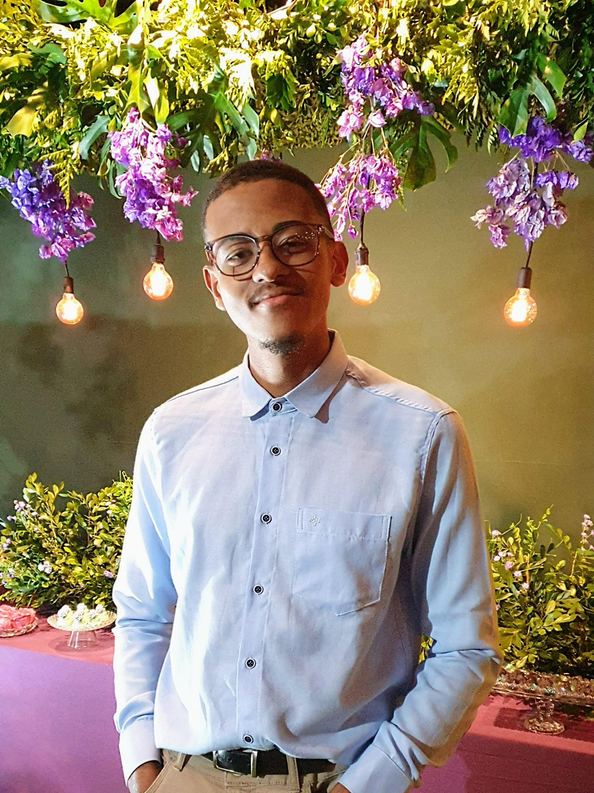

Bacharel em Engenharia de Computação
Universidade Tecnológica Federal do Paraná (UTFPR | Campus Cornélio Procópio)
2021-2027

phone Telefone: (73) 9-9825-4297
email E-mail: ellianmaciel2015@gmail.com
location_on Endereço: Centro, Cornélio Procópio/PR
link LinkedIn: linkedin.com/in/ellian-ribeiro
Estudante de Engenharia de Computação em busca de estágio na área de Tecnologia e TI. Possuo experiência prática em operação de equipamentos de áudio e vídeo. Desenvolvi habilidades em planejamento, organização e atendimento ao público, além de conhecimento em lógica de programação e ferramentas tecnológicas. Tenho facilidade de aprendizado, e interesse genuíno em contribuir para soluções inovadoras na área de tecnologia.
Universidade Tecnológica Federal do Paraná (UTFPR | Campus Cornélio Procópio)
2021-2027
Educa Audio (Certificado de Conclusão)
2024-2025
Plus a Mais Produtora (Certificado de Conclusão)
2024
CFBC - Centro de Formação de Bombeiros Civis (Certificado de Conclusão)
2017-2018
Jan 2023 - Presente
Tenho mais de 10 anos de envolvimento com som e música, começando pelo cuidado com o som na minha igreja. Em 2023, participei de um workshop no Festival Cena Local, onde aprofundei meu conhecimento na área de áudio. Desde então, realizei cursos especializados e comecei a atuar como freelancer, aprimorando minhas habilidades técnicas. Atualmente, sou contratado por bandas locais e uma empresa para trabalhos relacionados a áudio sempre que estou disponível.
Ago 2020 - Dez 2023
Tenho mais de 10 anos de envolvimento com som e música, começando pelo cuidado com o som na minha igreja...